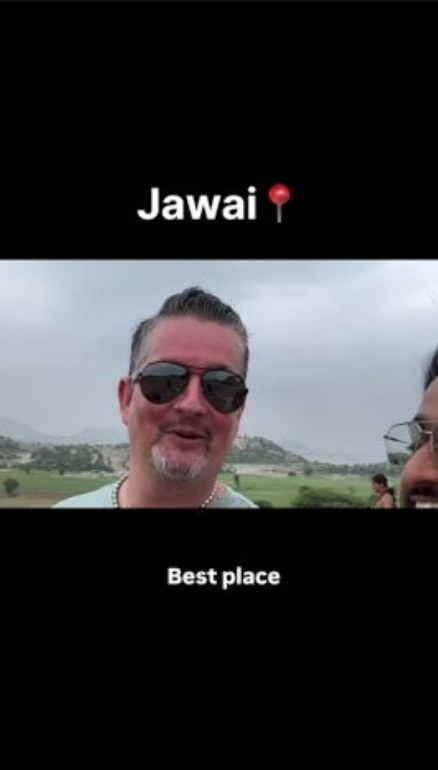

Jawai Leopard Safari
Jawai, Rajasthan
₹11,999for two guests
Home / Jawai Leopard Safari
Jawai, RajasthanPrivate wildlife experiences designed by a wildlife professional.
Plan your Jawai experienceJawai, in Rajasthan's Pali district, is one of India's best-known places to see leopards in open, rocky country. They rest in caves and on boulders above dry grassland and scrub, close to the villages and farms of the region.
A safari here is about reading the landscape: where the cats shelter, how they use the rocks, and what the wildlife around them is telling you. That is what Ashwin brings to every guest.
Every experience is planned around the season, the landscape and what you want to understand.
Track Jawai's granite hills with a wildlife biologist who reads behaviour, habitat and signs.
Photography with a biologist beside you, using Ashwin's own work as the reference.
Birding from Rajasthan's wetlands and grasslands to the Thailand Birding Expedition.
Granite hills, the dam, and the way people and leopards share this land.
A leopard safari in Jawai, from ₹11,999 for two guests.
Tigers at Ramgarh Vishdhari, Mukundra Hills and Sariska, plus the Bijoliya grasslands.
Jawai, Rajasthan
₹11,999for two guests
A guided leopard safari, shaped around your dates, group and interests.
Tell Ashwin your dates, group size and what you hope to see, and he will plan it with you.

Guest feedback · NetherlandsGuests from the Netherlands share what their Jawai safari with Ashwin was like.

Ashwin Tak · Wildlife Biologist · Naturalist · Safari & Wilderness Mentor
A trained naturalist with South African expert-guide training, Ashwin brings together animal behaviour, habitat interpretation, conservation work and storytelling to help guests understand more than just a sighting.
Where Jawai is, how to reach it, the best time to visit, what to pack and what to expect. Written for international travellers.
Wildlife, safari and stay — based in India, travelling across the wilderness world.